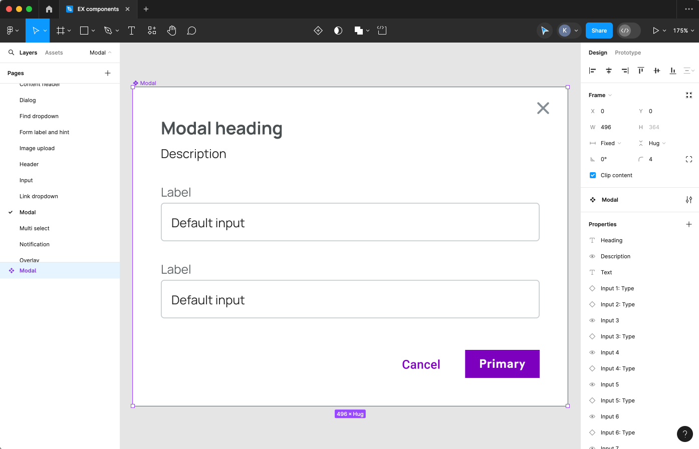

A design system is a collection of design principles, patterns, components, and guidelines. It's like a toolbox that helps keep everything looking and feeling the same across a product or organization. This makes things easier for designers, developers, and everyone else involved in creating and keeping up a consistent look and feel for a brand or product.
My Role and Contributions
As the leader of the Design System, I managed its development from start to finish. I did research, set principles, and created documents and libraries of components. Working with different teams, I made sure everything stayed consistent and easy to use. This made it fit smoothly into our workflow, making us more productive and keeping our brand style consistent.
Challenges
- Getting Everyone on Board: Convincing people in charge that the system was important.
- Flexibility and Consistency: Making it easy for teams to use while keeping everything looking consistent.
- Handling Growth: Making sure the system could handle changes and growth in the organization.
- Making It Accessible: Ensuring everyone, no matter what, could use it.
- Always Getting Better: Continuously improving based on feedback and design trends.
- Writing Stuff Down and Teaching People: Ensuring everyone knows how to use the system.
- Setting Rules: Establishing rules for updates and additions.
- Getting Everyone on the Same Page: Helping the organization see the importance of design.
Design Process
- Discovery: Figuring out what everyone needs and what's already out there.
- Research: Learning what others are doing and what users like.
- Definition: Making clear goals and deciding what's included in the design system.
- Design: Creating the basic parts and patterns based on our goals.
- Documentation: Writing down how to use everything so it's easy to follow.
- Development: Making sure everything works and can be used by everyone.
- Testing: Trying things out and getting feedback to make them better.
- Iteration: Making changes based on feedback and what we learn.
- Integration: Putting the system into our work process and teaching everyone how to use it.
- Maintenance: Keeping everything up-to-date and working well.
Results and Insights
Using our design system has made things a lot better. Everything looks more the same, development is smoother, and we all work together better. People using our product like it more, and we're saving money too. The best part is, we can still be creative while using the system. We'll keep improving to make things even better.
Visuals and Prototypes
As I showcase the design system's latest modals, I'm thrilled to provide a glimpse into our iterative design process. These screenshots highlight the evolution from initial concepts to refined prototypes, showcasing our commitment to user feedback and continuous improvement.
Conclusion
Implementing and leading the design system has been a rewarding journey, marked by significant improvements in consistency, collaboration, and user satisfaction. By addressing challenges and leveraging iterative design processes, we've created a unified framework that empowers creativity while ensuring brand coherence and scalability. Moving forward, I'm committed to further refining and enhancing our design system to continue delivering exceptional digital experiences.